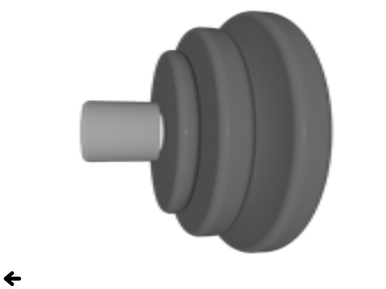

QML Examples - Image Elements
This is a collection of QML examples relating to image elements.

This is a collection of small QML examples relating to image elements.
'BorderImage' shows off the various scaling modes of the BorderImage item by setting its horizontalTileMode and verticalTileMode properties.
'Image' shows off the various fill modes of the Image item.
'Shadows' shows how to create a drop shadow effect for a rectangular item using a BorderImage:
'AnimatedSprite' shows how to display a simple animation using an AnimatedSprite element:
The sprite animation will loop 3 times.
'SpriteSequence' demonstrates using a sprite sequence to draw an animated and interactive bear. The SpriteSequence defines 5 different sprites. The bear is initially in a 'still' state:
When the scene is clicked, an animation sets the sprite sequence to the 'falling' states and animates the bear's y property.
At the end of the animation the bear is set back to its initial state.
Files:
- imageelements/animatedsprite.qml
- imageelements/borderimage.qml
- imageelements/image.qml
- imageelements/imageelements.qml
- imageelements/shadows.qml
- imageelements/spritesequence.qml
- imageelements/content/BorderImageSelector.qml
- imageelements/content/ImageCell.qml
- imageelements/content/MyBorderImage.qml
- imageelements/content/ShadowRectangle.qml
- imageelements/main.cpp
- imageelements/imageelements.pro
- imageelements/imageelements.qmlproject
- imageelements/imageelements.qrc